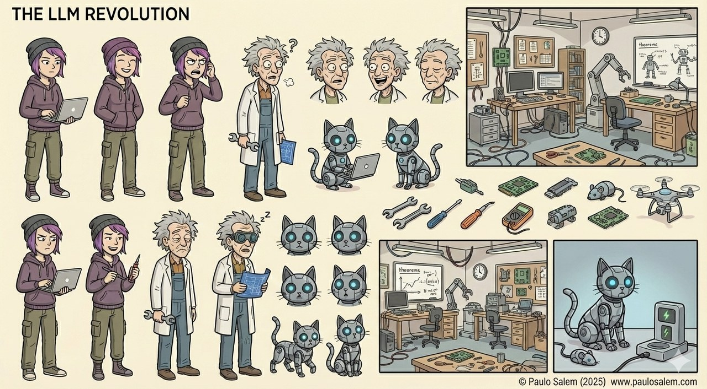
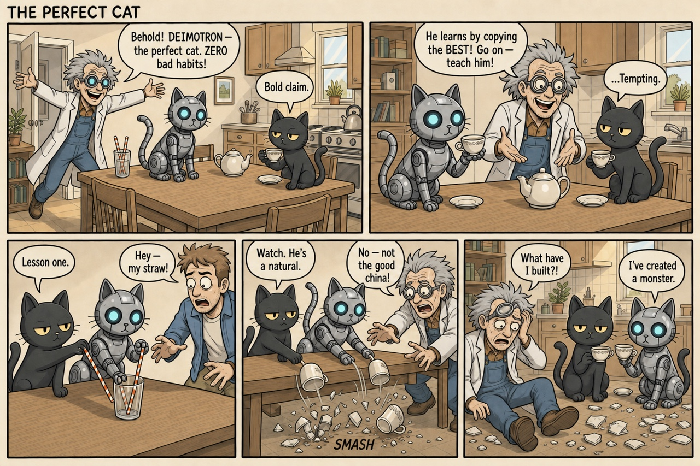
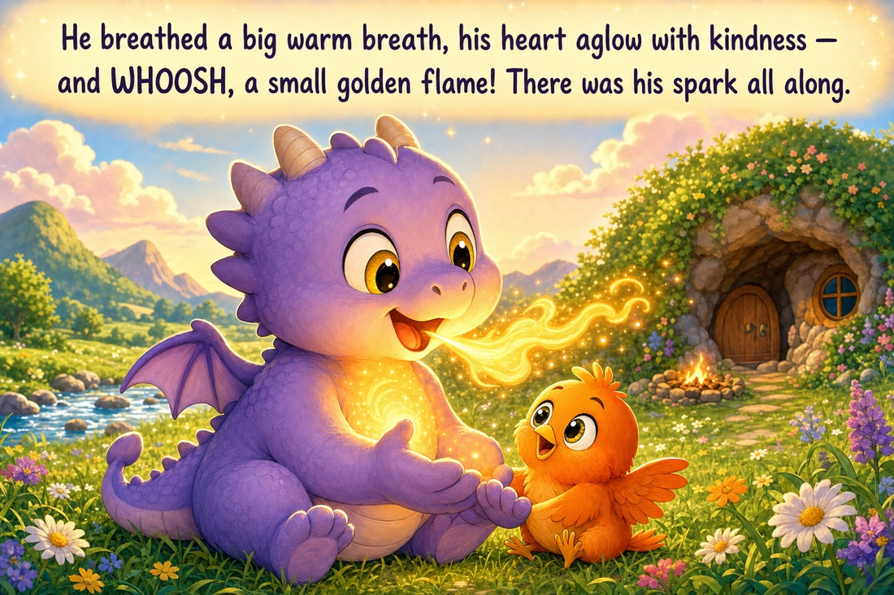

Highly experimental. WeaveMark’s notation, Processor, examples, and public interfaces are still evolving — expect rough edges, surprising results, and breaking changes.
Hands-on tutorial
Illustrated stories:
images in, images out.
Promplets are not limited to text. A specification can take images
as input and generate images as output. In this
tutorial you run two finished, in-repo examples — a
reference-driven comic strip and a
fully in-language children’s picture book —
and learn the handful of language features that make them work.
You runTwo multimodal pipelines: a comic strip and a printable storybook.
You produceA finished comic image, and a 12-page book as HTML + PDF.
You learn@output type: image, image inputs, @execute reflection/chain, dotted-path beats, and @package.
Source and folder links open GitHub. The page previews below are optimized
site images. Full-resolution generated PNG/PDF outputs are curated with
Git LFS; install Git LFS or use git lfs pull in a clone to
retrieve the originals. Commands assume the repository-root setup from
Tutorial 1.
0. Setup
Both examples are checked in and runnable. You need an image-capable
model provider configured (the examples default to OpenAI’s
image model for rendering and a vision model for authoring), and the
weavemark CLI on your path. Work from the repository root.
cd weavemark
export OPENAI_API_KEY=sk-... # or your provider's key
Heads up: these pipelines call real image models, so
they take time and incur usage cost. Pipeline structure and artifact
paths are explicit; authored text, prompts, and pixels remain
model- and run-dependent.
1. Images as input and output
Two small language facts unlock everything in this tutorial.
Images in — a Markdown link
Any ordinary Markdown image reference in a spec is
lifted into a real multimodal input and sent to
the model. No special directive — a link is enough. Toggle it
with @compile images: off when you want plain text.
@output type: image tells the engine this production
point renders an image instead of text. It carries
size, quality, model, and
edit: on (reference-guided editing).
@outputtype: image
size: 1536x1024
quality: high
edit: on
The key idea: the same notation you use for text
prompts now describes a picture. A promplet that reads reference art
and writes an illustration is still just a specification.
2. Run the reference-driven comic
The comic example feeds a style-reference strip and four character
sheets into the model, authors a scripted 5-panel strip, renders it,
and inspects its own output until it passes. Run it:
The runner first writes compiled-chain.json so you can
inspect the prompts and reflection settings before reviewing the
generated image and its inspection trace.
Under the hood that is a single weavemark --run over one
spec — no external script does the orchestration:
See the transfer for yourself. One of the inputs is this
character sheet — the reference for Doctor Krazy
and his robot cat Deimotron:

Reference in. A character sheet attached to the spec
as a plain Markdown image link. It fixes Doctor Krazy’s wild
Einstein hair, round goggles and lab coat, and Deimotron’s
cyan-eyed metallic body.
And here is the finished strip. Notice how those exact traits —
Krazy’s hair, goggles and coat, Deimotron’s glowing eyes and
mechanical joints — carry straight from the sheet into the
rendered panels where each character appears:

Result out. The finished strip, produced entirely
from the specification and its reference images. Deimotron mirrors
Deimos’s every bad habit; Doctor Krazy takes the fall. This
preview is a resized JPEG of
examples/saved-artifact-workflows/comic-strip-en/outputs/comic-strip.png.
That is the whole point: the reference images keep the cast on-model
and hold the reference’s soft pastel palette. The character sheets
and the style-reference comic are attached as inputs to both
the authoring and the rendering stages, so one drawing transfers
faithfully into another.
3. The self-inspecting render loop
The comic runs on @execute reflection, which is a
production chain followed by a critique → revise loop.
critique and revise are reserved roles; every
other @prompt stage is a production step. The last
production stage yields the artifact the loop refines.
@execute reflection
rounds: 3
@prompt author
@refine module:weavemark.domains.creative.illustrated_story_core
withstory_format:"comic-strip"withreferences: true
@prompt generate
@outputtype: image
file: comic-strip.png
size: 1536x1024
quality: high
edit: on
@{author}@if style_reference

@prompt critique
You are a strict comic-strip art director inspecting the attached RENDERED
comic strip against its specification.
Specification the image must satisfy:
-----
@{author}
-----
Reply with exactly "OK" if the image faithfully satisfies the specification
with none of these defects. Otherwise reply with a short bullet list of the
concrete, fixable defects, citing the panel. List only defects.
@prompt revise
@outputtype: image
size: 1536x1024
quality: high
edit: on
@{author}
The previous render had these defects — fix ALL of them exactly, and do NOT
introduce any new issues:
{{critique}}
Author sees the references
The author stage is a vision step: it reads the
character sheets and writes one detailed, on-model image prompt.
Its output threads forward as @{author}.
Render is conditioned on them too
generate attaches the same references with
edit: on, so the pixels — not just the words
— are guided by the reference art.
The model checks its own work
A vision model inspects the rendered image for wrong panel
counts, off-model or duplicated characters, and garbled lettering,
then revise edits it — stopping when satisfied.
@output file: persists it
The artifact stage names its file, so the final image is written to
the output directory automatically. No glue programs to write.
The story is not improvised. The concrete spec carries a
dynamic beat sheet. Instead of enumerating a fixed
number of dotted paths in the promplet, the author stage receives the
complete @{panels} object and requires exactly
@{panel_count} ordered entries.
## Panel beat sheet — exactly what happens in each panel
Realize these EXACT beats, in this order, one per panel. The staging and
dialogue of each panel are fixed: flesh out expression, framing, and comedic
timing around them, but do not add, drop, reorder, or merge beats, and keep
every line of dialogue verbatim as short hand-lettered speech balloons. Let the
final panel land the punchline cleanly. Use all @{panel_count} supplied entries
and preserve every staging beat and dialogue string exactly.
Supplied `panels` beat sheet:
@{panels}
The panels themselves live in the companion variables, so rewriting the
story never touches the spec — you edit data. This valid JSON
reduction keeps one exact panel entry:
{
"panels": {
"1": {
"staging": "Wide establishing shot of the sunlit kitchen-diner. Doctor Krazy bursts in from the left, arms flung wide, presenting Deimotron — his metallic silver-grey robot cat with glowing cyan eyes — on the table like a prize. Deimos sits upright at the same table with his teacup, eyes half-lidded, thoroughly unimpressed.",
"dialogue": "Doctor Krazy (beaming): \"Behold! DEIMOTRON — the perfect cat. ZERO bad habits!\" Deimos (flat): \"Bold claim.\""
}
}
}
Why this matters: the reusable core owns the craft
(consistency, art style, reference fidelity, panel layout); the concrete
spec owns the story; and the JSON owns the exact words. Change
the joke, rerun, done.
5. Run the children’s picture book
The storybook reuses the very same core, pinned to the
picture-book format, and runs on @execute chain:
an author stage writes the whole book, then a
page stage is repeated once per page,
rendering and persisting each illustration.
@execute chain
repeat: page
count:@{page_count}@prompt author
@refine module:weavemark.domains.creative.illustrated_story_core
withstory_format:"picture-book"
## Page beat sheet — exactly what happens on each page
Build the book to this exact page-by-page spine, in order — one entry per page.
For each supplied entry, turn its `scene` into a full, on-model illustration
prompt (restating every character's visual anchor), and use its `text` as that
page's narration. Preserve the exact provided text and distinctive staging;
refine only surrounding illustration detail and read-aloud rhythm. Do not skip,
reorder, merge, truncate, or invent entries, and ensure all @{page_count}
authored beats are represented.
Supplied `pages` beat sheet:
@{pages}@prompt page
@outputtype: image
file: pages/page-@{index}.png
size:@{image_size}
You are the illustrator for the picture book below. Render page @{index} of
@{count} as ONE finished illustration.
The full authored book (JSON), for story context and cross-page consistency:
@{author}
With narration lettered directly into each illustration, every image is
a complete, printable page. Run it:
The runner writes compiled-chain.json before execution,
then persists each rendered page as it becomes available and packages
the final HTML and PDF.

Page 9 of the generated book — “Orion and the Hunt for
His Spark.” This preview is a resized JPEG of
examples/saved-artifact-workflows/childrens-book-orion-en/outputs/pages/page-9.png.
The narration is rendered into the illustration, so the page is
ready to print.
Rendering twelve pages is only half the job — you still need a
deliverable. The @package directive assembles produced
artifacts after execution, entirely in the language:
A packaging-template promplet is compiled with the produced page
files in scope (@{page_files}) and fills a print-ready
HTML skeleton — a semantic assembly, no external programs.
from: convert
A produced deliverable is deterministically converted to another
format — here HTML becomes a print-ready
book.pdf.
The result is a folder with pages/page-1.png …
page-12.png, a book.html that references them
in order, and a single book.pdf you can send to a printer
— all from one weavemark --run.
These examples are not just prompt generators. When you run the
scripts with a configured image-capable model, the WeaveMark pipeline
executes and writes the finished media artifacts.
What to do with the output:
open
examples/saved-artifact-workflows/comic-strip-en/outputs/comic-strip.png
to review or share the finished comic, and open
examples/saved-artifact-workflows/childrens-book-orion-en/outputs/book.html
or
examples/saved-artifact-workflows/childrens-book-orion-en/outputs/book.pdf
to review, print, or distribute the picture book. Use each
example’s compiled-chain.json and inspection logs to
audit prompts and model decisions.
What you learned
A Markdown image link becomes a real multimodal input; @output type: image makes a stage render an output.
@execute reflection is a production chain plus a critique → revise loop — the model inspects and repairs its own rendered artifact.
@execute chain with repeat renders a sequence (one page after another) and @output file: persists each one.
Dynamic @{panels} and @{pages} objects let one source handle any declared panel or page count while every beat stays explicit data.
@package turns produced artifacts into deliverables (HTML, PDF) fully in the language — no glue script.
One reusable core (illustrated-story-core) powers both the comic and the book; the concrete specs only pin what differs.
Next: revisit
Reuse & refine to see the same
composition idea on text, or
Spec to app to wrap a compiled
spec in a running project.
{kind=link}